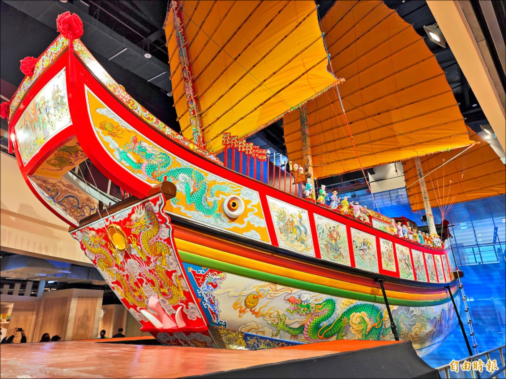
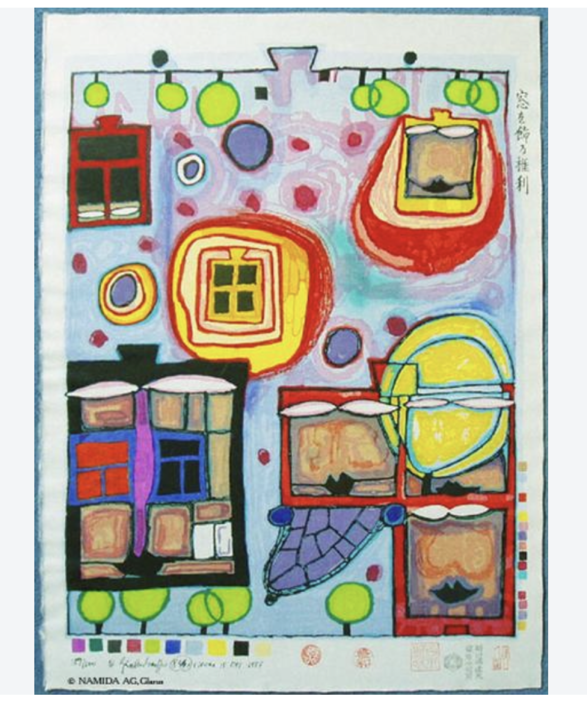
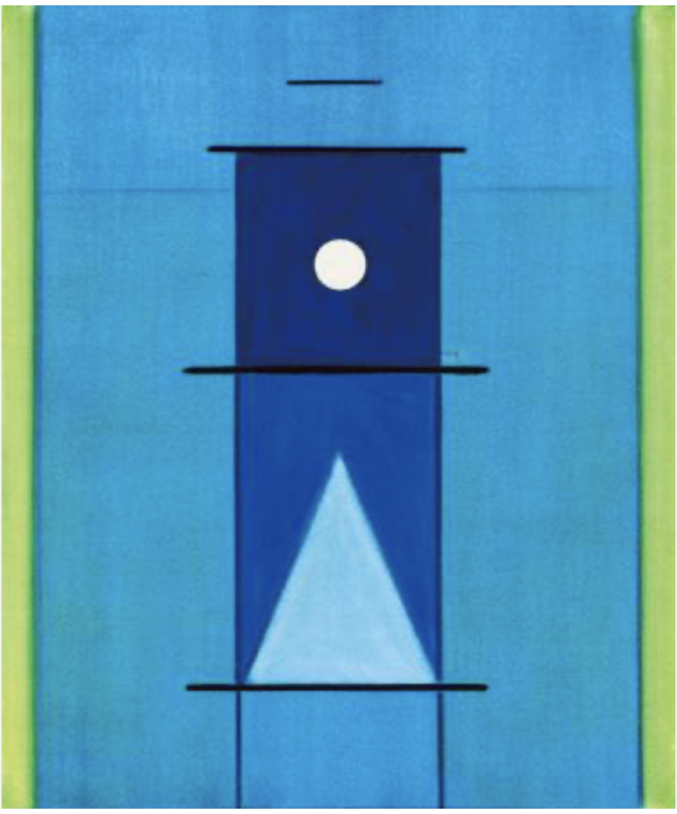

在地文化 × 感官觀察跟著風、海與土地去旅行：
孩子的屏東藝術課
這不是單純介紹屏東景點，而是帶孩子從味道、果實、海洋、落山風、王船信仰與梅花鹿出發，認識一個地方如何形成文化。
從生活與土地開始，讓孩子理解文化不是課本裡的名詞。
透過觀察自然、節慶與地方故事，建立孩子對台灣的感受力。
把地方經驗轉成色彩、形狀與創作，讓孩子用自己的方式說故事。
兩個主題，兩種觀看世界的方式。孩子會從土地文化與藝術家語言出發，練習觀察、感受、選擇，也練習把自己的想法說出來。
這一期我們把課程收斂成兩個清楚的主題：一個從台灣土地出發，一個從藝術家的線條語言出發。家長可以很快看懂孩子在課堂裡累積的能力。

在地文化 × 感官觀察這不是單純介紹屏東景點，而是帶孩子從味道、果實、海洋、落山風、王船信仰與梅花鹿出發，認識一個地方如何形成文化。


藝術家賞析 × 線條表達百水先生帶孩子看見曲線、窗戶、自然與自由生長；霍剛帶孩子看見直線、幾何、留白與秩序。兩種完全不同的線條語言，讓孩子知道藝術沒有唯一答案。
大綠地的主題課程，不是讓孩子照著範例完成一張作品，而是透過故事、圖片、材料、身體感受與老師提問，陪孩子一步一步進入主題。
每一堂課，孩子都會經歷「觀察、感受、選擇、創作、表達」的過程。老師不急著示範答案，而是引導孩子看見細節、說出想法，並用自己的方式完成作品。
屏東藝術介紹，讓孩子從台灣土地、文化與自然中建立感受力；百水先生 × 霍剛藝術家主題，則讓孩子從曲線、直線、色彩、留白與空間裡，發展自己的藝術語言。